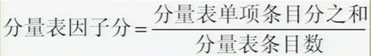

00：00
第四节 应激及相关问题评估
第一单元 生活事件量表（LES） |
第二单元 社会支持评定量表 |
第三单元 应对方式问卷 |
第一单元 生活事件量表（LES）
一、学习目标
掌握LES的实施与记分方法。
二、工作程序
(一).测验的实施
1. 生活事件量表（Life Event Scale，LES）有多个版本，这里所使用的是由杨德森、张亚林1986年编制的。
2.LES含有48条我国较常见的生活事件，包括三方面的问题。一是家庭生活方面（28条），二是工作学习方面（13条），三是社交及其它方面（7条）。
01:05
3. LES适用于16岁以上的正常人、神经症、身心疾病、各种躯体疾病求助者以及自知力恢复的重性精神病求助者。
①神经症、心身疾病、各种躯体疾病及重性精神疾病的病因学研究；
②指导心理治疗、危机干预，使心理治疗和医疗干预更有针对性；
③甄别高危人群，预防精神和心身疾病，对LES高者加强预防工作；
④指导正常人了解自己的精神负荷、维护心身健康，提高生活质量。
4.根据调查者的要求，将某一时间范围内（通常为一年内）的事件记录下来。
5.
根据自身的实际感受而不是按常理或伦理道德观念去判断那些经历过的事件对本人来说是好事或是坏事？
6.
影响程度如何？
7.
影响持续的时间有多久？
03:45
（二）.测验的记分：
1.一过性的事件如流产、失窃要记录发生次数；
2.长期性事件如住房拥挤、夫妻分居等不到半年记为 1 次，超过半年记为 2 次。
3.影响程度分为 5 级，从毫无影响、轻度、中度、重度、极重，分别记 0、1、2、3、4 分。
4.影响持续时间分三月内、半年内、一年内、一年以上共 4 个等级，分别记 1、2、3、4 分。
生活事件刺激量的计算方法：
1．某事件刺激量＝该事件发生次数×该事件影响程度分×该事件持续时间分
2．正性事件刺激量＝全部好事刺激量之和
3．负性事件刺激量＝全部坏事刺激量之和
4．生活事件总刺激量＝正性事件刺激量+负性事件刺激量
（三）.结果的解释：
1.LES总分越高反映个体承受的精神压力越大。
2.95% 的正常人一年内的LES总分不超过 20分；
3.99% 的不超过 32 分。
4.负性生活事件的分值越高对心身健康的影响越大；
5.正性生活事件分值的意义尚待进一步的研究。
09:28
三、相关知识：
（一）.LES的目的和背景：
1.从60年代起，人们对各种生活事件的“客观定量”有了较多的研究兴趣。其中最有代表性的人物是美国的Holmes TH。
2.杨德森按事件的影响程度、持续时间和发生次数的记分最有特色。
3.强调根据被试的主观感受对生活事件作定性和定量评定，又对正性、负性生活事件作了区分。
（二）.对生活事件量表的评价：
1.该量表在心理健康领域已广泛运用。但是，从心理评估技术角度看，该类量表并非十分完善。
2.一是大多数量表内容只适用于一般人群的一般性生活事件评估，而对于特殊人群如不同年龄、不同职业人群等和特殊情境下的人群如某病种人群、战争状态等针对性较差；
3.二是目前的生活事件量表主要是对既往某段时间发生的事件进行回忆和评定，易受被评定者当时的认知状态和情绪状态的影响，如遗忘所致的对事件的严重程度评分过高或过低等，使结果的可靠性受到影响。
4.近年来，有研究者采用即时记录发生的生活事件及身心状态的方法，作为生活事件量表评定的补充，使生活事件评定结果更为可靠。
12:31
四、注意事项：
1.注意调查的时间范围，只计研究所规定的时限内发生的生活事件。例如过去3月、或半年、或一年内，即某年某月某日至某月某日间，曾否发生下列事件。
2.为了保证该生活事件确在评定要求的时限内，对每项作肯定回答（即曾发生）的事件，还要让受检者说明具体发生时间，以便核查。这样做的另一优点在于还可将一次收集的资料（例如一年内），作多种时限的处理（如3月内、6月内和一年内）。但调查时间不宜过长，以免因记忆不可靠影响资料的准确性。
3.一般应向受检者本人进行调查，如果从知情者那里获得资料，应说明资料来源、知情者和受检者的关系。评定中应取询问法，如果是让受检者自行填写，亦在备注中说明。
14:18
第二单元 社会支持评定量表
一、学习目标
掌握社会支持评定量表的实施与记分方法。
二、工作程序
（一）.测验的实施：
社会支持评定量表由肖水源于1986年编制，该量表共有十个条目，包括客观支持（3条）、主观支持（4条）和对社会支持的利用度（3条）三个维度。
（二）.适用范围：
了解被试者社会支持的特点及其与心理健康水平、精神疾病和各种躯体疾病的关系。
（三）.施测步骤：
实施测验时，请受检者按各个问题的具体要求，根据实际情况填写，并要求其合作。
（四）.测验的记分：
1.条目记分方法：
（1）第1～4，8～10条：每条只选一项，选择1、2、3、4项分别记1、2、3、4分。
（2）第5条分A、B、C、D、E五项记总分，每项从无到全力支持分别记1～4分，即无记1分，极少记2分,一般记3分，全力支持记4分。
（3）第6、7条如回答“无任何来源”则记0分，回答“下列来源”者，有几个来源就记几分。
16:10
2.量表的统计指标：
（1）总分：即10个条目评分之和。
（2）客观支持分：2、6、7条评分之和。
（3）主观支持分：1、3、4、5条评分之和。
（4）对支持的利用度：第8、9、10条评分之和。
三、相关知识：
一般认为，社会支持从性质上可以分为两类，一类为客观的、可见的或实际的支持，包括物质上的直接援助、社会网络、团体关系的存在和参与，如家庭、婚姻、朋友、同事等；另一类是主观的、体验到的情感上的支持，指的是个体在社会中受尊重、被支持、理解的情感体验和满意程度，与个体的主观感受密切相关。
除实际的客观支持和对支持的主观体验外，量表的编制者（1987）还提出，社会支持的研究还应包括个体对支持的利用情况。而人与人的支持是二个相互作用的过程，一个人在支持别人的同时，也为获得别人的支持打下了基础。因此，对社会支持的评定有必要把支持的利用情况作为社会支持的第三个维度。
22:13
第三单元 应对方式问卷
一、学习目标
掌握应对方式问卷的记分与统计指标。
二、工作程序
（一）.测验的实施
1.这里选用的应对方式问卷由肖计划等参照国内外应对研究的问卷内容以及有关“应对”的理论，根据我国文化背景编制而成。
2.该量表包括62个条目，共分为6个分量表，分别为：解决问题、自责、求助、幻想、退避、合理化。
（二）.适用范围：
1.文化程度在初中和初中以上；
2.年龄在14岁以上的青少年，成年和老年人；
3.除痴呆和重性精神病之外的各类心理障碍患者。
它可解释个体或群体的应对方式类型和应对行为特点，比较不同个体或群体的应对行为差异，并且不同类型的应对方式还可以反映人的心理发展成熟的程度。
24:36
（三）.施测步骤：
“应对方式问卷”为自陈式个体应对行为评定量表。检查者将问卷发给受检者后，要求受检者首先认真阅读指导语，然后根据自己的实际情况，逐条回答问卷每个项目提及的问题。答完问题后，当场收回。
每个条目有两个答案，“是”、“否”，如果选择“是”，则请继续对后面的“有效”、“比较有效”、“无效”作出评估；如果选择“否”，则请继续下一个条目。
（四）.测验的记分：
1.量表分记分方法：“应对方式问卷”有六个分量表，每个分量表由若干个条目组成，每个条目只有两个答案，“是”和“否”。记分分两种情况；
2.计算各分量表的因子分
因子分计算方法如下：

29:02
三、相关知识：
（一）各分量表的意义：
应对因子间的相关分析发现“解决问题”与“退避”两个应对因子的负相关程度最高。
以此作为六个应对因子关系序列的两极，然后根据各因子与“解决问题”应对因子相关系数的大小排序，可将六个应对因子排出下列关系序列图：
退避→幻想→自责→求助→合理化→解决问题
（二）不同形式的组合与解释：
1.“解决问题—求助”，成熟型：在生活中表现出一种成熟稳定的人格特征和行为方式。
2.“退避——自责”，不成熟型：表现出一种神经症性的人格特点，其情绪和行为均缺乏稳定性。
3.“合理化”，混合型：在应对行为上表现出一种矛盾的心态和两面性的人格特点。
（三）.量表的应用价值。
1.可以作为不同群体的应对行为研究的标准化工具之一；
2.由于良好的应对方式有助于缓解精神紧张，帮助个体最终成功地解决问题，从而起到心理平衡，保护精神健康的作用。因此，评估个体或某个群体的应对行为，有助于为心理健康保健工作提供依据；
3.用于不同群体应对行为类型和特点研究，为不同专业领域选拔人才提供帮助；
4.用于不同群体应对行为类型和特点研究，为培养人才提供帮助；
5.用于各种心理障碍的行为研究，为心理治疗和康复治疗提供指导；
6.用于各种有心理问题人的行为研究，为提高和改善人的应对水平提供帮助。
35:00
四、注意事项：
本量表的评定的时间范围是指受检者近两年来的应对行为状况。
本章小结：
1.心理生理行为诸方面存在的问题及其严重程度：SCL-90
2.问题产生的社会因素：LES 社会支持量表
3.人格及认知方面的原因：EPQ 16PF 应对方式问卷
4.神经症性障碍: ASA SDS
5.精神病性问题：MMPI
6.智力问题，记忆障碍等：WAIS 比内测验 CRT